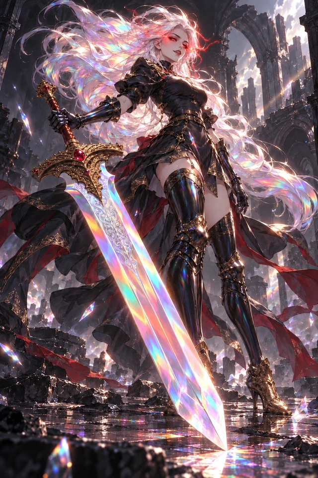

“도망쳐 봐. 더 즐거워질 테니.”
붉게 타오르는 눈, 빛을 삼키는 대검.
가장 약해진 적을 포착하고 무거운 두 번의 검격으로 마무리합니다.
전투 리소스를 준비하고 있습니다.
바토리 · 전투 모션 시연
REVERSE CALL · HALLOWEEN LIMITED
SS 리미티드 · 서버 한정 10장


“도망쳐 봐. 더 즐거워질 테니.”
붉게 타오르는 눈, 빛을 삼키는 대검.
가장 약해진 적을 포착하고 무거운 두 번의 검격으로 마무리합니다.
전투 리소스를 준비하고 있습니다.
바토리 · 전투 모션 시연